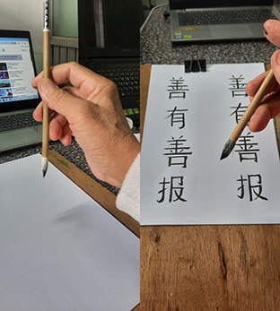

การเขียนพู่กันจีนเป็นศิลปะชั้นสูงของจีน
ช่วยให้เราได้ฝึกสมาธิและขัดเกลาจิตใจ
การเขียนพู่กันจีนเป็นทั้งศาสตร์และศิลป์

|
|
|
||
|  | |||
|
มาเรียนรู้และฝึกเขียนพู่กันจีนด้วยกันครับ
การเขียนพู่กันจีนเป็นศิลปะชั้นสูงของจีน ช่วยให้เราได้ฝึกสมาธิและขัดเกลาจิตใจ การเขียนพู่กันจีนเป็นทั้งศาสตร์และศิลป์ |
|